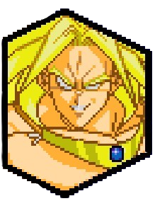
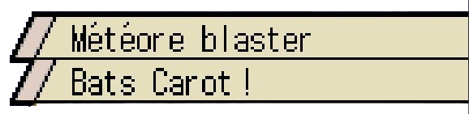
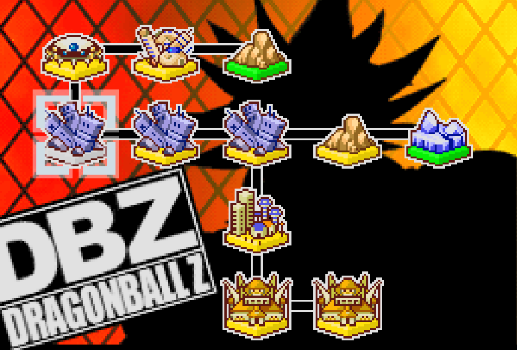
En tuant Freezer, Goku a également bafoué l'honneur de sa famille, c'est là que le grand frère de Freezer intervient pour venger l'honneur familial: Cooler. Il arriva sur Terre et met une ville à feu et à sang afin d'attirer le saiyan, ce qu'il arriva à faire. Gohan et Piccolo n'avaient pas tardé à se montrer face au tyran. Les soldats de Cooler et Cooler lui même demandèrent où se trouve le Super Saiyan qui a vaincu Freezer mais Piccolo refusant de parler, Cooler passa à l'offensive. Piccolo et Gohan tombèrent face à Cooler et ses hommes.
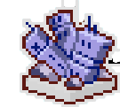
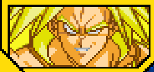


Alors que Cooler gagnait du terrain dans l'affrontement, il nargua Goku en lui dmandant si c'est tout ce que peut faire un Super Saiyan. Voyant que la chance est de son côté, il balaya sans problème les armées de la Terre et faisait régner la terreur. Alors que Vegeta perdit la vie face à Cooler, la Terre perdit son dernier guerrier capable de résister à Cooler. La statégie de Cooler était assez bonne pour conquérir toute la planète, il détruisait méthodiquement chaque ville. Un beau jour Mecha Freezer arriva sur Terre, les terriens n'avaient nul autre chose que de se soumettre. 10 ans plus tard, les hommes de Cooler sont à la recherche des derniers survivants Saiyans, mais personne ne fut trouvé, car ils sont capables d'échapper à leur surveillance. Voyant l'incompétence de ses hommes, Cooler décide de s'en charger lui-même, il emmena Freezer avec lui pour dénicher les saiyans. on apprend que Gohan avait survécu et entraînait en cachette, Trunks le fils de Vegeta. La résistance face à Cooler continuait nuit et jour. Un beau jour Cooler trouva Gohan et Trunks grâce à ses hommes malgré leur incompétence et un combat s'engagea entres les deux tyrans et les deux survivants. Alors que les conquérants ont gagnés, Cooler demande comment ils arrivent à trouver les points faibles de la surveillance, Gohan encore en train de résister, dit à Trunks de fuir et ne compte rien dire. Trunks prit la fuite et Gohan perdit la vie à son tour face à l'envahisseur.
Débloque l'attaque combinée avec Mecha Freezer "Tempête gelée"

Battre Goku.

Quelques temps après, les espions de Cooler l'informèrent que Trunks est devenu un Super Saiyan et est devenu plus puissant que Gohan. Actuellement il détruit les unités militaires de Cooler. Cooler voulant s'en charger, demanda d'abord à Freezer s'il peut le vaincre, mais ce dernier répond que vu qu'il s'est fait vaincre une première fois par Goku, ne pourra pas vaincre un Super Saiyan aussi fort ou si ce n'est plus que lui. Voyant le manque d'assurance de Freezer, Cooler se voit lui-même dans l'obligation de le vaincre, étant le seul pouvant le faire. Cooler alla à la recontre de Trunks qui s'entraîné et apprit à Cooler qu'à la mort de Gohan, la fureur réveilla le Super Saiyan qu'il est et maintenant il souhaite se venger de Cooler. Un match retour entre le Saiyan et le conquérant froid est en place et malheureusement Trunks se fait abattre par Cooler et Freezer qui n'ont désormais aucune résistance face à eux. Cooler remarque le comportement étrange de Freezer et lui posa la question en lui disant que les Super Saiyans qui l'ont rendu ce qu'il est, sont désormais tous vaincus, il devrait être content pourtant. Freezer répondit avec un "Oui" assez spécial.
Terminer le combat contre Gohan et Trunks .

Désormais sur Terre, il n'existe plus aucun guerrier capable de résister à Cooler, mais ce dernier reste sur ses gardes. Avec Sauzer, Cooler remarque que Freezer agit bizarrement et compte désormais lui régler son compte, Neizu hésite, mais Cooler est formel, les ordres ne sont pas discutables et Freezer doit payer de sa trahison. Le jour suivant alors que les deux frères partaient en expédition, Cooler annonce qu'ils vont attaquer la capitale de l'Ouest et que toute résistance sera anéanti. Freezer prit de court pensait qu'aujourd'hui, ils devaient attaquer la capital de l'Est. Cooler avait changé d'avis sans le consulter, remarquant que Freezer ne semble pas satisfait. C'est alors que Sauzer arrive et annonce à Cooler que la capitale de l'Est est belle et bien déserte comme l'ont vérifié ses hommes. Prouvant la trahison de Freezer, par ce fait là, Cooler demande des explications à son frère, mais son frère ne voulant pas répondre, préfère un combat. C'est alors qu'un combat à mort se déroula entre les deux frères. Cooler vaincut Freezer qui termina au sol et lui dit que s'il avait obéit sagement, il l'aurait surement laissé la vie sauve. Sauzer demanda ce qu'on doit faire de Freezer et Cooler lui répondit qu'étant son frère, il lui réserve sa technique la plus puissante, mais le plus inquiétant est le fait que leur père le Roi Cold aura vent de sa trahison. Cooler prit donc la décision d'attaquer ouvertement son père afin d'être tranquille, la bataille qui s'en suit fut d'une intensité rarement atteinte que nul terrrien ne peut la contempler
Débloque l'Attaque Ultime "Arc Explosif"

Terminer le combat contre Trunks

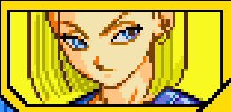
Les hommes de Cooler ont signalés la position de Goku et directement Goku confond Cooler avec Freezer, ce qui me en colère Cooler qui ne tolère pas qu'on le mette dans le même panier que son frère. Cooler lui demande s'il est le Super Saiyan ayant vaincu Freezer, ce que Goku confirma. C'est alors qu'un combat démarre entre le bafoueur de la plus grande lignée de l'Univers et le dernier de sa lignée. Alors que le combat semblait terminé pour Goku, Cooler voyant qu'au final le Super Saiyan n'est qu'une légende, il décida de détruire la Terre, mais sous le coup de la colère, Goku devient Super Saiyan et repousse la Supernova de Cooler, jusqu'au soleil, ce qui fin à la vie de Cooler.
Débloque la compétence "Honneur sauf".
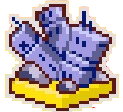

Alors que Cooler était mort et vaincu, malheureusement il n'en était rien, il avait survécu. La cause de sa résurrection était une planète-machine appelée Big Gete Star, qui avait la capacité d'absorbé des planètes pour se développer, Cooler se lia à elle et en prit le contrôle. Il jetta son dévolu sur la nouvelle planète Namek pour en faire le coeur de sa base. Les guerriers Z invités pour voir la nouvelle Namek, arrivèrent et virent que tout à changé. Il y avait des robots qui envahissaient la planète, prenaient en otage la population mais surtout que Cooler était en vie et avait changé, il était devenu Metal Cooler. Piccolo fut son premier adversaire, qui fut choqué de le voir en vie et s'en suit un combat que Piccolo ne pouvait gagner face à l'armée de Metal Cooler. Metal Cooler content d'avoir vaincu le Namek, annonce que ce sera bientôt au tour de la Terre et qu'il viendra se venger des Super Saiyans.
Débloque Metal Cooler
Terminer le combat contre Piccolo en perdant 2 Metal Cooler.

Battre Goku avec un Ultimate KO .

Après avoir vaincu Piccolo, Metal Cooler se dirige vers la Terre avec le Big Gete Star, avec l'intention de faire payer aux Saiyans et tous ceux qui ont contribué à sa défaite. En arrivant sur Terre, Metal Cooler se rappela que le Terre renferme des boules de cristal et commence à réfléchir à comment les utiliser. C'est alors que Goku accompagné de Vegeta tous deux en Super Saiyan apparaîssent, prêts à se battre contre Metal Cooler. Metal Cooler écrasa les Super Saiyans avec tous ses corps et absorba leur énergie. Maintenant, cap sur les boules de cristal.
Débloque l'Attaque Ultime "Pluie machine"
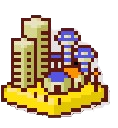
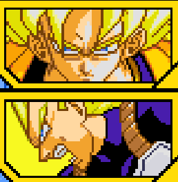
Metal Cooler rassemble les 7 boules de cristal et ramène à la vie le Commando Ginyu, Zarbon et Dodoria. Le commando Ginyu comme à son habitude fait une pose en groupe pour célébrer leur renaissance, ce qui laisse Cooler de marbre. Le capitain propose même à leur seigneur de se joindre, ce qui comiquement fait déjà regretter Cooler de les avori rappelé. Zarbon et Dodoria viennent et avertissent qu'il y a de grandes puissances dans les alentours, Cooler en profite pour voir la vraie puissance de ses soldats. En allant sur place, on voit le Dr Gero avec les cyborgs en train de rechercher Son Goku, alors qu'ils détruisaient tout sur leur passage, Metal Cooler arriva et fut étonné de voir que les terriens ont créer des corps cybernétiques. Les cyborgs furent étonnés de voir l'armée de Cooler et ce dernier déclara qu'ils alimenteront la puissance des Metal Coolers. Metal Cooler et son armée écrasa les cyborgs impuissants qui viendront alimenter la puissance de Metal Cooler.
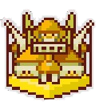
Terminer le combat contre Goku et Vegeta.
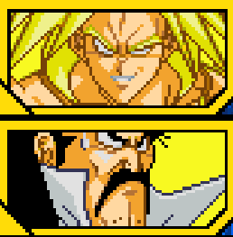

Après avoir absorbé les cyborgs, l'Etoile du Grand Guedester gagna en puissance. Cependant un problème survient, pendant que Ginyu et son groupe réfléchissait à une pose groupée où Cooler pourrait être intégré, Dodoria signala qu'un mosntre se nourrit de la force vitale des troupes dans la capitale de l'Ouest, aussitôt Cooler et les autres se préparèrent au combat. Etant désormais sur palce, le monstre en question était Cell qui cherchait sa forme parfaite et voyant Cooler qui ne peut être absorbé, mais en revanche Metal Cooler voit un être comme Cell intéressant a absorbé et un combat s'en suit entre les deux. Après avoir vaincu Cell, l'étoile Big Gete Star absorba le cyborg. Mais cet ordre aura de lourdes conséquences innatendues par la suite, Cell encore conscient, vit C-17 et C-18 dans le même endroit, prêts à être absorbés, maintenant il est parfait .

Terminer le combat contre les Cyborgs.

Metal Cooler écrasa Piccolo et la Nouvelle Namek avec lui. Piccolo informa Goku du danger et arriva directement pour confronter Cooler. Alors que Cooler se réjouissait de retrouver le Super Saiyan et de savoir qui sera le plus puissant de l'Univers, Vegeta intervient et se transforme en Super Saiyan. Cooler surpris de l'apparition de 2 Super Saiyan, se résolut à se dire qu'un singe ou deux ne changera pas sa victoire. Il s'en suit alors un combat intense entre Metal Cooler et les deux Super Saiyan. Alors qu'il semblait avoir gagné, Metal Cooler absorba l'énergie des deux Super Saiyans, pensant avoir tout absorbé il déclara être l'être le plus puissant de l'Univers, mais contre toute attente les deux Super Saiyans n'avaient pas tout donné et lorsqu'il donnèrent tout, l'ordinateur commença à surchauffer et tout explosa, laissant la planète-machine comme un tas de feraille cosmique. Cependant un corps de Metal Cooler était toujours là, malgré que les saiyans avaient réussi à détruire l'enveloppe physique.
Débloque la compétence "Résurrection".

Terminer le combat contre Piccolo en perdant 2 Metal Cooler.

Metal Cooler écrasa Piccolo et la Nouvelle Namek avec lui. Piccolo informa Goku du danger et arriva directement pour confronter Cooler. Alors que Cooler se réjouissait de retrouver le Super Saiyan et de savoir qui sera le plus puissant de l'Univers, Vegeta intervient et se transforme en Super Saiyan. Cooler surpris de l'apparition de 2 Super Saiyan, se résolut à se dire qu'un singe ou deux ne changera pas sa victoire. Il s'en suit alors un combat intense entre Metal Cooler et les deux Super Saiyan. Alors qu'il semblait avoir gagné, Metal Cooler absorba l'énergie des deux Super Saiyans, pensant avoir tout absorbé il déclara être l'être le plus puissant de l'Univers, mais contre toute attente les deux Super Saiyans n'avaient pas tout donné et lorsqu'il donnèrent tout, l'ordinateur commença à surchauffer et tout explosa, laissant la planète-machine comme un tas de feraille cosmique. Cependant un corps de Metal Cooler était toujours là, malgré que les saiyans avaient réussi à détruire l'enveloppe physique.
Débloque la compétence "Résurrection".
Terminer le combat contre Piccolo en perdant 2 Metal Cooler.